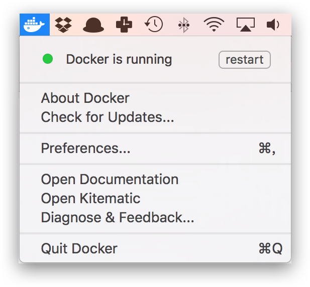

# macOS 安装 Docker Desktop CE
# 系统要求
Docker Desktop for Mac 要求系统最低为 macOS Sierra 10.12。
# 安装
# 使用 Homebrew 安装
Homebrew 的 Cask 已经支持 Docker Desktop for Mac，因此可以很方便的使用 Homebrew Cask 来进行安装：
$ brew cask install docker
# 手动下载安装
如果需要手动下载，请点击以下链接下载 Stable 或 Edge 版本的 Docker Desktop for Mac。
如同 macOS 其它软件一样，安装也非常简单，双击下载的 .dmg 文件，然后将那只叫 Moby 的鲸鱼图标拖拽到 Application 文件夹即可（其间需要输入用户密码）。

# 运行
从应用中找到 Docker 图标并点击运行。

运行之后，会在右上角菜单栏看到多了一个鲸鱼图标，这个图标表明了 Docker 的运行状态。

第一次点击图标，可能会看到这个安装成功的界面，点击 "Got it!" 可以关闭这个窗口。

以后每次点击鲸鱼图标会弹出操作菜单。

启动终端后，通过命令可以检查安装后的 Docker 版本。
$ docker --version
Docker version 19.03.1, build 74b1e89
$ docker-compose --version
docker-compose version 1.24.1, build 4667896b
$ docker-machine --version
docker-machine version 0.16.1, build cce350d7
如果 docker version、docker info 都正常的话，可以尝试运行一个 Nginx 服务器：
$ docker run -d -p 80:80 --name webserver nginx
服务运行后，可以访问 http://localhost，如果看到了 "Welcome to nginx!"，就说明 Docker Desktop for Mac 安装成功了。

要停止 Nginx 服务器并删除执行下面的命令：
$ docker stop webserver
$ docker rm webserver
# 镜像加速
如果在使用过程中发现拉取 Docker 镜像十分缓慢，可以配置 Docker 国内镜像加速。